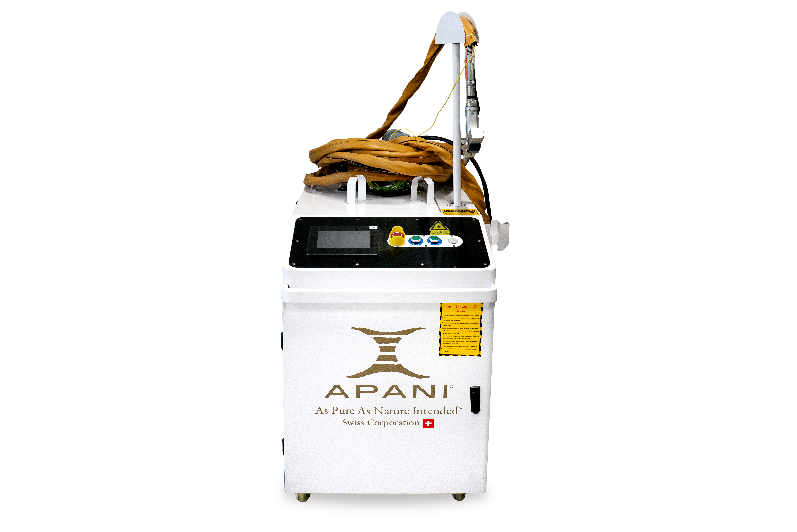
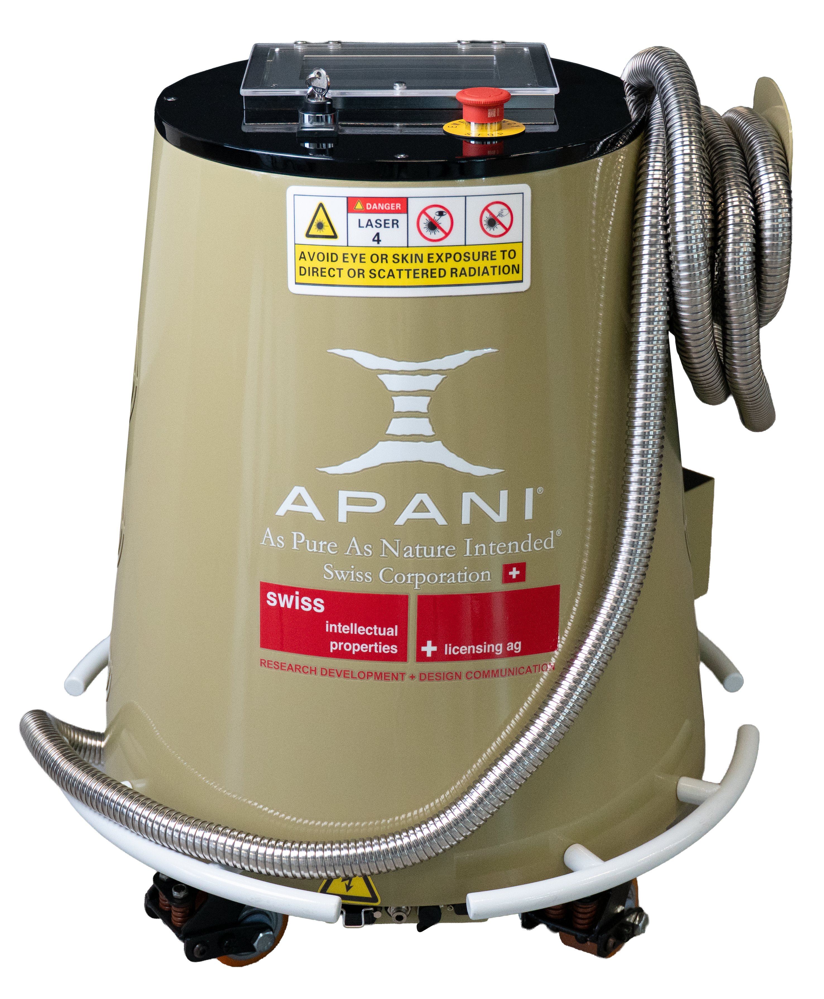

Schweissnähte reinigen mit Laser
Anlauffarben, Oxidschichten und Schweissschmauch entfernt der Laser in einem Arbeitsgang — ohne Beizpaste, ohne Säurebad und ohne die Naht wegzuschleifen. Mit dem AP2000 schweissen und reinigen Sie sogar mit demselben Gerät.

Saubere Schweissnähte — ohne Säure und ohne Nacharbeit
Nach dem Schweissen ist die Arbeit selten fertig. Rund um die Naht bilden sich Anlauffarben, Oxide und Schmauch, die je nach Einsatz nicht stehen bleiben dürfen — sei es aus optischen Gründen, für eine nachfolgende Beschichtung oder weil Rückstände die Korrosionsbeständigkeit beeinträchtigen können. Klassisch wird deshalb gebeizt, gebürstet oder geschliffen.
Beizpasten und Beizbäder enthalten aggressive Säuren. Sie verlangen Schutzausrüstung, sorgfältiges Abspülen und eine fachgerechte Entsorgung des Spülwassers. Schleifen und Bürsten wiederum verändern die Oberfläche der Naht und hinterlassen sichtbare Spuren, die bei Sichtteilen nachgearbeitet werden müssen.
Der Reinigungslaser entfernt die Verfärbungen und Oxidschichten trocken und berührungslos. Die Naht selbst bleibt in ihrer Form erhalten, das Grundmaterial wird nicht abgeschliffen. Es gibt kein Spülwasser, keine Säurereste und keine Einwirkzeit — die Teile können direkt nach der Reinigung weiterverarbeitet, verpackt oder montiert werden.
Auch vor dem Schweissen ist der Laser nützlich: Öl, Rost, Walzhaut oder alte Beschichtungen im Nahtbereich lassen sich gezielt entfernen, damit die Naht auf sauberem Material entsteht. Wer Schweissen und Reinigen in einem Gerät haben möchte, findet im APANI AP2000 ein 3-in-1-System für Schweissen, Schneiden und Reinigen.
Laser im Vergleich zu Beizen und Schleifen
Wie sich die Schweissnaht-Reinigung mit dem Laser von den gängigen Verfahren unterscheidet.
Symbolbild — Ziehen Sie den Regler, um Vorher und Nachher zu vergleichen.
| Kriterium | Beizpaste / Beizbad | Schleifen / Bürsten | APANI Laser |
|---|---|---|---|
| Säuren & Chemie | Ja, aggressiv | Nein | Nein |
| Spülen & Neutralisieren | Erforderlich | Nicht nötig | Nicht nötig |
| Veränderung der Naht | Gering | Naht wird abgetragen | Form bleibt erhalten |
| Sichtbare Spuren | Teilweise Flecken | Schleifbild | Gleichmässige Oberfläche |
| Entsorgung | Säurehaltiges Spülwasser | Schleifstaub | Nur Filterrückstände |
| Vorbereitung vor dem Schweissen | Nicht geeignet | Möglich, mit Abtrag | Gezielt ohne Abtrag |
Reinigen vor und nach dem Schweissen
Vor dem Schweissen
Öl, Rost, Walzhaut und Beschichtungen im Nahtbereich gezielt entfernen — für eine Naht auf sauberem Grundmaterial.
Nach dem Schweissen
Anlauffarben, Oxide und Schmauch entlang der Naht entfernen, ohne die Naht abzuschleifen.
Direkt weiter
Kein Spülen, kein Trocknen, keine Säurereste: Das Teil geht sofort in die Montage, Beschichtung oder Auslieferung.
Wo saubere Nähte zählen
Überall, wo Schweissnähte sichtbar sind oder weiterverarbeitet werden.
Besonders bei Edelstahl-Sichtteilen — Geländer, Abdeckungen, Möbel- und Ladenbau — macht die Nahtreinigung einen grossen Teil der Arbeitszeit aus. Mit dem Laser wird sie zu einem kurzen, sauberen Arbeitsschritt direkt am Arbeitsplatz, ohne dass Teile zum Beizen transportiert oder gespült werden müssen.
Welcher APANI Laser passt zu Ihren Schweissnähten?
Für die reine Nahtreinigung genügt in vielen Werkstätten ein Reinigungslaser. Wer zusätzlich schweissen und schneiden möchte, fährt mit dem AP2000 am besten: Ein Gerät für drei Arbeitsschritte, das an 230 V läuft.

AP300
Laser-Reinigungssystem- Reinigungslaser für die Werkstatt
- Nahtreinigung vor und nach dem Schweissen
- Kompakt und mobil
- 230 V Plug & Play
AP2000
Schweissen · Schneiden · Reinigen- Schweissen, Schneiden und Reinigen
- Ein Gerät für drei Arbeitsschritte
- Für Metallbau und Schlosserei
- 230 V Plug & Play
Erst sehen, dann entscheiden
APANI begleitet Sie vom ersten Test bis zum Service — direkt aus der Schweiz.
Live-Präsentation
Die Präsentation findet bei unserem Partner Carrosserie & Spritzwerk Marty in Wangen SZ statt.
Testgerät & Leasing
Testen Sie den Laser im eigenen Betrieb oder verteilen Sie die Investition über Leasing. Preise und Konditionen erhalten Sie auf Anfrage.
Einschulung inklusive
Bei der Lieferung schulen wir Ihr Team direkt am Gerät — Bedienung, Parameter und sicheres Arbeiten.
230 V Plug & Play
Normale Steckdose, kein Wasseranschluss, keine Kabine. Der Laser ist sofort dort einsatzbereit, wo die Arbeit anfällt.
2 Jahre Garantie
Alle APANI Laser kommen mit zwei Jahren Garantie — für einen sorgenfreien Einstieg in die Lasertechnik.
Service in der Schweiz
Wartung und Service übernimmt APANI selbst in der Schweiz — ohne Umwege über ausländische Servicestellen.
Häufige Fragen
Kann der Laser Anlauffarben von Edelstahl entfernen?
+Ja. Anlauffarben und Oxidschichten entlang der Naht lassen sich mit dem Laser entfernen, ohne Beizpaste und ohne Schleifen. Welche Einstellungen für Ihr Material und Ihre Nahtart passen, zeigen wir bei der Einschulung.
Ersetzt die Laser-Reinigung das Beizen vollständig?
+Für viele Anwendungen ja, besonders bei Sichtteilen. Wenn für Ihre Bauteile eine bestimmte Nachbehandlung vorgeschrieben ist, prüfen Sie diese Vorgaben bitte im Einzelfall — wir beraten Sie gerne dazu.
Kann ich mit dem AP2000 auch schweissen?
+Ja. Der AP2000 ist ein 3-in-1-Gerät zum Schweissen, Schneiden und Reinigen. So können Sie mit einem Gerät die Naht vorbereiten, schweissen und anschliessend reinigen.
Wird die Schweissnaht durch den Laser geschwächt?
+Der Laser entfernt Verfärbungen und Oxide an der Oberfläche, er schleift die Naht nicht ab. Die Form der Naht bleibt erhalten — im Gegensatz zum Schleifen, bei dem Material abgetragen wird.
Kann ich die Nahtreinigung vorher testen?
+Ja. Die Live-Präsentation findet bei unserem Partner Carrosserie & Spritzwerk Marty in Wangen SZ statt. Zudem bieten wir Testgeräte und Leasing an.
Weitere Anwendungen: Laser-Rostentfernung · Laser-Lackentfernung · Spezialreinigung mit Laser